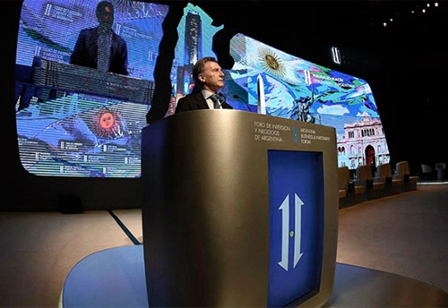

Real Chubut - Agencia de Noticias


"La deflación es una circunstancia porque sabemos que la tarifa va a volver a aumentar" y otras definiciones de Mauricio Macri en el Foro

El presidente anunció que Juan José Aranguren vendió sus acciones de Shell y restó importancia a las diferencias entre Federico Sturzenegger y Alfonso Prat-Gay
ego de inaugurar el Foro de Inversión y Negocios en el Centro Cultural Kirchner (CCK), el presidente Mauricio Macri se mostró expectante sobre el potencial del encuentro e insistió en que la Argentina crecerá en 2017. "No hay duda de que la Argentina está en el camino correcto", enfatizó esta mañana en rueda de prensa.
"El país está en recesión hace un año producto de todas las cosas que no se hicieron o se hicieron mal especialmente en los últimos cinco años. Lo bueno es que se empiecen a ver índices del fin de la recesión. Esto es todos los días, despacio, en la dirección correcta", comentó el jefe de Estado, y añadió: "Esto no es producto de un Gobierno, sino que hay una sociedad que maduró y que entendió que este es el camino. Eso hace que la Argentina se transforme en un lugar más atractivo"
A su vez, Macri analizó los objetivos y sus perspectivas de cara al encuentro de empresarios e inversores que se desarrollará en el CCK hasta el jueves, con la presencia de ejecutivos como Muhtar Kent, presidente global de Coca Cola y Andrew Liveris, número uno global de Dow. "Los dos son fanáticos de esta nueva etapa de la Argentina. Por supuesto, ellos esperan que haya coherencia y constancia en todo lo que venimos diciendo", añadió.
Por otra parte, el presidente se refirió a las discrepancias en cuanto a la visión de la política económica entre Federico Sturzenegger, presidente del BCRA, y Alfonso Prat-Gay, ministro de Hacienda. "Tienen roles distintos. Uno cuida la moneda y Alfonso fija las reglas macro de la economía. Son dos visiones complementarias. Más allá de que haya matices", aseguró.
En ese contexto, Macri se refirió a la evolución de la inflación, luego del fallo de la Corte que frenó momentáneamente el aumento de las tarifas del gas: "La deflación es una circunstancia porque, todos sabemos, la tarifa cayó pero va a volver a aumentar. La inflación va a oscilar en torno al 1 y medio hasta llegar en un par de años a un dígito anual"
"Tenemos que estar comprometidos a que eso se sostenga en el tiempo", continuó Macri, y luego agregó: "La gente entiende que estamos en una etapa de esfuerzo, de mérito personal, de progreso. Todos estamos dentro del mismo colectivo. Yo siento que la mayoría de los argentinos lo hemos entendido".
Ante la consulta sobre el proyecto de presupuesto para 2017, que esta semana llegará al Congreso, el presidente confirmó que la estimación del crecimiento estará entre "tres y tres y medio por ciento", mientras que el tipo de cambio se mantendrá "flotando". "Va a tener mucho que ver con el nivel de inversión que haya en la Argentina, las importaciones, especialmente bienes de capital. Queda claro que yo quiero un tipo de cambio equilibrado, porque el desarrollo de las economías regionales va a a dar más trabajo a los argentinos", comentó.
En cuanto a los segmentos que, según su visión, liderarán la reactivación, Macri ubicó a las energías verdes y al sector agropecuario: "Renovables va a ser un suceso, sin duda. La energía en general también lo va a ser. Confío en que vamos a ir avanzando en acuerdos productivos nacionales con todas las partes. Después el campo, que es el gran eje del país".
Por otra parte, Macri se refirió a la polémica por las acciones de Shell en poder del ministro de Energía Juan José Aranguren y anunció que el ex CEO de la compañía en la Argentina se había desprendido de esos activos. "Lo ha hecho para que quede absolutamente claro que lo único que lo mueve es ayudar al país. Lo hizo él por propia decisión. Entiendo que ahora extrememos las formas, soy el primero en dar el ejemplo porque creo que la Argentina viene de una época donde la corrupción y la mentira dominaban el escenario", se explayó.